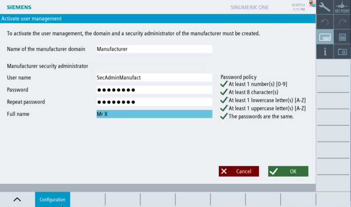

Introduction
If you want to activate the user management function, you must first create a local manufacturer domain with associated security administrator.
|
Note
|
What does the manufacturer do? / What does the end user do?
After creating your own domain, the manufacturer's Security Admin can preconfigure a separate domain with user groups and users for the end user. When the machine is handed over to the end user, this data can be transferred to the end user with confidence.
The security admin manufacturer also creates the end user domains and the first user security admin end user. With this security admin end user, the end user can add his own user accounts and user groups.
|
|
Notice
|
With user management enabled, no more logging in with classic access level passwords
-
As soon as you have activated user management, the classic login via the defined access level passwords is NO longer possible.
-
Login using the key switch is not supported as part of the new user management.
-
After activating user management, you can only log in to SINUMERIK Operate using the user name and password of the defined users. Therefore, make sure beforehand that you understand how user management works and how to configure roles, groups, and users in general.
-
After activation of the user management, the PI service: LOGIN and the PI service: LOGOUT are no longer supported.
-
After deactivation of the user management, the access level passwords that were valid before the user management was activated in the NCU are active again.
|
|
Notice
|
User management functions always dependent on login
Note that the functions of the user management are dependent on the current login and the respective rights/roles of the logged-in user. Therefore, you may not be able to use all the functions of the user management if you do not have the required rights/role for this function.
|
|
Notice
|
Security Admin password forgotten?
-
If there is no longer a Security Admin of the end user domain who still knows their password, an Admin of the manufacturer domain must deactivate user management manually. When user management is deactivated, all configured data is irrevocably deleted (see chapter Deactivating user management) and the old access level passwords that were valid before user management was activated are valid again. The manufacturer can then set up and activate user management again.
-
If there is no longer a Security Admin of the manufacturer domain who remembers their password, an Admin of the manufacturer domain must delete the NCU completely and reinstall the CNC software, because without passwords for the Security Admin Manufacturer role, manual deactivation of user management is no longer possible and logging in with the Security Admin Manufacturer role is also no longer possible.
To reset the NCU from a USB service stick, in the SINUMERIK ONE service system, select menu item "Clear all + reinstall system SW from USB stick and create system restore point". You must then recommission the CNC software.
-
Therefore, always keep all passwords - especially the passwords for the Security Admins - in a safe place! We recommend the use of a password manager.
-
We recommend that you always create more than one Security Admin for both domains, in case you forget a password.
|
Requirement
|
Note
|
User management on the IPC
Before you activate user management on the IPC, you should pair the connected NCUs. Without pairing, the NCU remains without user management and the IPC cannot appropriately change the access level of the NCK.
|
Procedure

Activating user management
In the "Setup" operating area, call the user management via the "Security > User management" softkeys. The overview page for user management opens in the "Configuration" softkey. Click on "Activate user management". The "Activate user management" page opens in which you can initially define the name for the manufacturer domain and a Security admin manufacturer. Select a name for the manufacturer domain. | Note | The name for the domain cannot be subsequently changed. |
Assign a user name for the Security admin manufacturer. Assign a password for the Security admin manufacturer. When doing so, observe the default password policies. The password must consist of at least 8 characters. It must contain at least one lowercase letter, one uppercase letter and one digit. Recommendations for the assignment of secure passwords can be found on the .
You can change the default password policies after activating user management via dialog Policies. Repeat the password. Optionally, enter a name of the security administrator. The complete name (or the initials) are used to identify the user in the login button. The user name is used if a complete name has not been saved. In this context, carefully observe the key notes on the General Data Protection Regulation. Confirm your selection with "OK".
|
Result
The user management function is now enabled.
A local manufacturer domain has been defined.
You are logged into the system as Security admin manufacturer.
| Notice |
An activated user management replaces the classic form of access level managementNote that the activated user management completely replaces the classic form of access level management with all defined passwords. |
Further steps